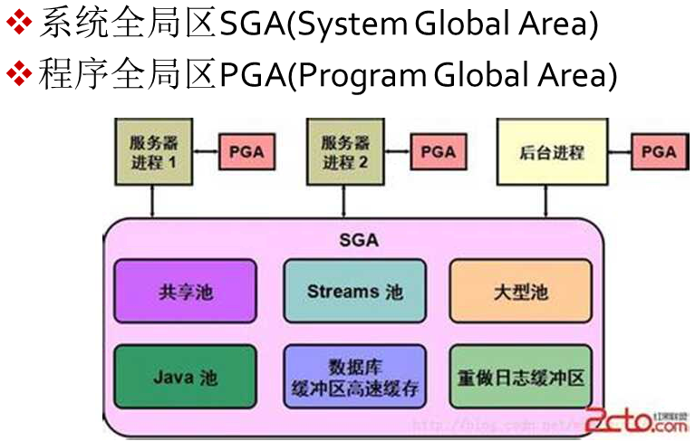

<!DOCTYPE html>


<html lang="en">


<head>
  <meta charset="utf-8" />
    
  <meta name="viewport" content="width=device-width, initial-scale=1, maximum-scale=1" />
  <title>
    Oracle SQL |  
  </title>
  <meta name="generator" content="hexo-theme-ayer">
  
  <link rel="shortcut icon" href="/favicon.ico" />
  
  <link rel="stylesheet" href="/dist/main.css">
  <link rel="stylesheet" href="https://cdn.jsdelivr.net/gh/Shen-Yu/cdn/css/remixicon.min.css">
  <link rel="stylesheet" href="/css/custom.css">
  
  <script src="https://cdn.jsdelivr.net/npm/pace-js@1.0.2/pace.min.js"></script>
  
  

  

  <link rel="stylesheet" href="https://cdn.jsdelivr.net/gh/highlightjs/cdn-release@latest/build/styles/vs2015.min.css"><!- highlight.js ->
  <script src="https://cdn.jsdelivr.net/gh/highlightjs/cdn-release@latest/build/highlight.min.js"></script>
  <script>
    hljs.initHighlightingOnLoad();
  </script>
</head>

</html>


<body>
  <div id="app">
    
      
    <main class="content on">
      <section class="outer">
  <article
  id="post-Oracle-SQL"
  class="article article-type-post"
  itemscope
  itemprop="blogPost"
  data-scroll-reveal
>
  <div class="article-inner">
    
    <header class="article-header">
       
<h1 class="article-title sea-center" style="border-left:0" itemprop="name">
  Oracle SQL
</h1>
 

    </header>
     
    <div class="article-meta">
      <a href="/2017/07/30/Oracle-SQL/" class="article-date">
  <time datetime="2017-07-30T13:31:43.000Z" itemprop="datePublished">2017-07-30</time>
</a> 
  <div class="article-category">
    <a class="article-category-link" href="/categories/%E5%90%8E%E7%AB%AF/">后端</a>
  </div>

  
<div class="word_count">
    <span class="post-time">
        <span class="post-meta-item-icon">
            <i class="ri-quill-pen-line"></i>
            <span class="post-meta-item-text"> Word count:</span>
            <span class="post-count">3.7k</span>
        </span>
    </span>

    <span class="post-time">
        &nbsp; | &nbsp;
        <span class="post-meta-item-icon">
            <i class="ri-book-open-line"></i>
            <span class="post-meta-item-text"> Reading time≈</span>
            <span class="post-count">16 min</span>
        </span>
    </span>
</div>
 
    </div>
      
    <div class="tocbot"></div>


  
    <div class="article-entry" itemprop="articleBody">
       
  <h2 id="Oracle-服务器配置"><a href="#Oracle-服务器配置" class="headerlink" title="Oracle 服务器配置"></a>Oracle 服务器配置</h2><h3 id="Oracle-服务器实例"><a href="#Oracle-服务器实例" class="headerlink" title="Oracle 服务器实例"></a>Oracle 服务器实例</h3><p>一个实例只能用于访问一个数据库</p>
<p>由内存和后台进程组成</p>
<p>由SID标识</p>
<p>Oracle的内存结构主要组成：</p>
<p></img></p>
<p>专用进程实例：一个服务器进程对应一个用户进程</p>
<p>多进程实例一个服务器进程对应多个用户进程(轮流服务)</p>
<h3 id="安装11G"><a href="#安装11G" class="headerlink" title="安装11G"></a>安装11G</h3><ol>
<li>创建和配置数据库</li>
<li>服务器类</li>
<li>典型安装：配置安装位置与密码</li>
</ol>
<h3 id="初始数据库用户"><a href="#初始数据库用户" class="headerlink" title="初始数据库用户"></a>初始数据库用户</h3><p>username:Sys</p>
<p>username:System<br>password:安装时设置</p>
<h3 id="登录数据库"><a href="#登录数据库" class="headerlink" title="登录数据库"></a>登录数据库</h3><p>系统用户：</p>
<ol>
<li>sys,system(超级管理员)默认密码:安装时创建</li>
<li>sysman(用于企业管理)默认密码:安装时创建</li>
<li>scott(管理员)默认密码:tiger</li>
</ol>
<p>启动sqlplus应用程序(稍后登录)</p>
<pre><code>sqlplus /nolog</code></pre><p>用户登录命令</p>
<pre><code>conn username/password@连接字符串 as 身份(sysdba/sysoper/normal(默认))</code></pre><p>以Sys身份登录()</p>
<ol>
<li><p>若sqlplus所运行的操作系统的登录身份在ora_dba组内的话不需要密码</p>
<blockquote>
<p>conn sys as sysdba<br>或<br>conn / as sysdba</p>
</blockquote>
</li>
<li><p>若sqlplus所运行的操作系统的登录身份不在ora_dba组内</p>
<blockquote>
<p>conn sys/安装时设置的密码 as sysdba</p>
</blockquote>
</li>
</ol>
<p>锁定/解锁用户：</p>
<pre><code class="sql">alter user 用户名 account lock/unlock;</code></pre>
<p>物理数据库存储在：</p>
<p>程序安装目录\app\admin\oradata\数据库名<code>D:\app\admin\oradata\orcl</code></p>
<h3 id="连接远程服务器"><a href="#连接远程服务器" class="headerlink" title="连接远程服务器"></a>连接远程服务器</h3><p>网络服务的配置(相当于保存连接，会保存用户名和密码)：</p>
<p>需要：IP，端口，服务名，用户名和密码。(还需要开启监听程序)</p>
<blockquote>
<p><code>conn system/root@10.1.59.26:1521/orcl</code>;</p>
</blockquote>
<h3 id="本地网络服务名配置"><a href="#本地网络服务名配置" class="headerlink" title="本地网络服务名配置"></a>本地网络服务名配置</h3><ol>
<li>打开<code>Net Configuration Assistant</code></li>
<li>本地网络服务名配置</li>
<li>添加</li>
<li>输入要连接的数据库名</li>
<li>TCP</li>
<li>主机名输入要连接的主机的IP地址</li>
<li>测试成功后</li>
<li>输入数据库显示在本地的名称，例如：db</li>
<li>使用该名称登录数据库：<code>conn system/root@db</code></li>
</ol>
<h3 id="配置管理数据库"><a href="#配置管理数据库" class="headerlink" title="配置管理数据库"></a>配置管理数据库</h3><p>创建数据库：</p>
<ol>
<li>打开<code>Database Configuration Assistant</code>(简称DBCA)</li>
<li>创建数据库</li>
<li>选择模板：事务处理</li>
<li>输入全局数据库名，访问时使用SID访问该数据库</li>
<li>设置各个用户密码</li>
</ol>
<hr>
<h3 id="查询所有表信息"><a href="#查询所有表信息" class="headerlink" title="查询所有表信息"></a>查询所有表信息</h3><p>dba_tables:数据库中的所有的表对象</p>
<p>user_tables:当前登录的用户所拥有的表对象</p>
<pre><code class="sql">--example:
select table_name,tablespace_name from user_tables;</code></pre>
<p>all_tables:当前登录的用户有权访问的表对象</p>
<pre><code class="sql">--example:
select owner,table_name,tablespace_name from all_tables;</code></pre>
<hr>
<h2 id="数据块体系结构"><a href="#数据块体系结构" class="headerlink" title="数据块体系结构"></a>数据块体系结构</h2><h3 id="数据库开启顺序"><a href="#数据库开启顺序" class="headerlink" title="数据库开启顺序"></a>数据库开启顺序</h3><p>shutdown-&gt;(读参数文件init.ora)nomount-&gt;(读控制文件)mount-&gt;(读所有文件)open</p>
<pre><code class="sql">startup mount; -- 进入读控制文件状态
alter database open; -- 进入读所有文件状态</code></pre>
<hr>
<h3 id="表空间"><a href="#表空间" class="headerlink" title="表空间"></a>表空间</h3><p>一个表会在一个表空间里以离散的数据块的形式存储。组成一张表的全部数据块称为一个segment(数据段)。事实上Oracle为了保证性能会将一张表里的数据块已连续的形式进行存储，每一个连续的数据存储空间成为一个数据区。</p>
<p></img></p>
<p>创建表空间：</p>
<pre><code class="sql">create tablespace 空间名 datafile &#39;d:/空间名.dbf&#39; size 10m autoextend on next 10m maxsize 1g;

create tablespace table0725 datafile &#39;d:/0725.dbf&#39; size 10m autoextend on next 10m maxsize 500m;

--example:
create tablespace shoppingtp datafile &#39;d:/shoppingtp01.dbf&#39; size 10m autoextend on next 10m maxsize 1g;
alter tablespace shoppingtp add datafile &#39;d:/shoppingtp02.dbf&#39; size 10m autoextend on next 10m maxsize 1g;</code></pre>
<p>添加文件到表空间(扩大表空间)：</p>
<pre><code class="sql">alter tablespace tptest add datafile &#39;d:/tptest02.dbf&#39; size 10m;</code></pre>
<p>查询表空间:</p>
<pre><code class="sql">select name from v$tablespace;

-- 解释表dba_data_files
desc dba_data_files;

-- 查看SHOPPINGTP表空间的信息
select file_name,tablespace_name,bytes,blocks from dba_data_files where tablespace_name=&#39;SHOPPINGTP&#39;;
</code></pre>
<p>删除表空间：</p>
<pre><code class="sql">drop tablespace xxx;
--若表空间非空
drop tablespace xxx including contents and datafiles;

--example:
drop tablespace table0725 including contents and datafiles;</code></pre>
<p>查看表空间资源分配策略：</p>
<pre><code class="sql">show parameter resource_limit</code></pre>
<p>创建表要解决的问题: where(表存在哪),whose(谁能操作表)</p>
<hr>
<h2 id="用户权限管理"><a href="#用户权限管理" class="headerlink" title="用户权限管理"></a>用户权限管理</h2><p>数据库模型：</p>
<ol>
<li>层次模型</li>
<li>网络模型</li>
<li>关系模型</li>
<li>面向对象的数据模型</li>
</ol>
<h3 id="用户"><a href="#用户" class="headerlink" title="用户"></a>用户</h3><p>验证方式：数据库验证、操作系统验证。</p>
<pre><code class="sql">desc dba_users;

select username,password,created,default_tablespace from dba_users;

select username,created from dba_users;

-- 查询用户默认表空间
select username,default_tablespace from dba_users;</code></pre>
<p>创建用户：</p>
<pre><code class="sql">-- 密码验证abc
create user test_user identified by abc;

-- 创建一个默认表空间为tptest的用户且其在表空间上的配额为100M,密码默认为过期
create user test_user2 identified by abc default tablespace tptest quota 100m on tptest password expire;

--example:
create user shopping_user identified by abc default tablespace shoppingtp quota unlimited on shoppingtp;</code></pre>
<p>修改用户：</p>
<pre><code class="sql">-- 修改用户默认表空间
alter user test_user default tablespace table0725;</code></pre>
<p>删除用户：</p>
<pre><code class="sql">drop user test_user;</code></pre>
<p>查询用户:</p>
<pre><code class="sql">select * from all_users;</code></pre>
<hr>
<h3 id="权限"><a href="#权限" class="headerlink" title="权限"></a>权限</h3><ol>
<li>系统权限(system privelege)</li>
<li>对象权限(object privelege)</li>
</ol>
<p>select, update, delete, inseret, execute, index, reference, alter, read</p>
<p>赋予权限：</p>
<pre><code class="sql">-- 将create session权限(可以登录)赋予test_user
grant create session to test_user;

-- 将create table权限(可以建表)赋予test_user
grant create table to test_user;

-- 将查询表t4的权限赋予test_user
grant select on t4 to test_user;</code></pre>
<p>回收权限：</p>
<pre><code class="sql">-- 将insert t4的权限从test_user回收
revoke insert on t4 from test_user;</code></pre>
<p>访问其他用户创建的表需要以下操作：</p>
<pre><code class="sql">-- t4表由test_user2创建
-- 使用test_user来访问t4表
-- test_user2与test_user同级

-- 将查询表t4的权限赋予test_user
grant select on t4 to test_user;
-- 将插入表t4的权限赋予test_user
grant insert on t4 to test_user;

select * from test_user2.t4;</code></pre>
<h3 id="角色"><a href="#角色" class="headerlink" title="角色"></a>角色</h3><pre><code class="sql">-- 将connect角色与resource角色赋予test_user
grant connect,resource to test_user2;</code></pre>
<hr>
<h3 id="创建概要文件"><a href="#创建概要文件" class="headerlink" title="创建概要文件"></a>创建概要文件</h3><pre><code class="sql">-- 
show parameter resource_limit;
alter system set resource_limit = TRUE;</code></pre>
<p>创建概要文件</p>
<pre><code class="sql">create profile pro_test limit
sessions_per_user 3 -- 每个用户的会话允许个数
connect_time 3 -- 该用户每个会话的存活时间(分钟)
failed_login_attempts 2 -- 密码错误次数
;

create profile pro_test limit
sessions_per_user 3
connect_time 3
failed_login_attempts 2
;</code></pre>
<p>查看用户对应的概要文件</p>
<pre><code class="sql">select username,profile from dba_users;

-- 修改用户test_user的概要文件为pro_test
alter user test_user profile pro_test; </code></pre>
<hr>
<h2 id="表对象"><a href="#表对象" class="headerlink" title="表对象"></a>表对象</h2><p>关系型数据库中的完整性约束：</p>
<ol>
<li>实体完整性：每个表都要有主键(primary key)</li>
<li>域完整性：每个数据项都要符合其对应的数据类型与长度等约束</li>
<li>引用完整性：外键</li>
<li>自定义完整性：check给数据项制定合法规则</li>
</ol>
<p>创建表：</p>
<pre><code class="sql">--example:
create table t_orders(
oid char(8) primary key, -- 主键
uiid char(6) references t_user(uiid), -- 外键(列级约束)
uiid char(6) constraint fk_uiid reference t_user(uiid),-- 有约束名的外键
foreign key(uiid2) constraint fk_uiid2 reference t_user(uiid)
, -- 表级有约束名的外键
customer varchar2(20) not null, -- 非空只能做列级约束
odate date default sysdate, -- 默认当前系统时间
girlfriend char(8) unique, -- 唯一，不能重复
onum number(2) check(onum&gt;0), -- check实现自定义约束
);</code></pre>
<pre><code class="sql">--example:成绩表
--5W(学生数)*10(门课)=500000*1K(每条大小)=500M
--4(个学期)*500M=2000M=2G
create table cs(
--省略
)
pctfree 10 --当表空间剩余空闲空间&lt;10%时停止插入操作
pctused 40 --当停止插入操作后表空间使用&lt;40%时恢复插入操作
STORAGE( -- 存储参数设置
INTIAL 4096M -- 初始化导入数据大小
NEXT 500M -- 空间不够增加多少
)</code></pre>
<p>将已有的表另存为新表(不会复制外键约束)：</p>
<pre><code class="sql">create table emp as select * from employee;</code></pre>
<p>删除数据：</p>
<pre><code class="sql">-- 删除数据，可带条件，可恢复(速度慢)
delete * from emp;

-- 截断：不可恢复删除数据(速度快)，保留表结构
truncate table emp;

-- 删除数据和表，不可恢复
drop table emp;</code></pre>
<hr>
<h2 id="分区"><a href="#分区" class="headerlink" title="分区"></a>分区</h2><h3 id="范围-RANGE-分区"><a href="#范围-RANGE-分区" class="headerlink" title="范围(RANGE)分区"></a>范围(RANGE)分区</h3><p>例子：</p>
<p>根据商品价格分区</p>
<p>根据订单金额分区</p>
<pre><code class="sql">/*3商品信息表*/
create table T_GOODS(
GID CHAR(6) PRIMARY KEY,
GNAME VARCHAR2(20) NOT NULL,
GTID CHAR(6) references T_TYPE(GTID),
GPRICE NUMBER(12,3) check(GPRICE&gt;0),
GDISCOUNT NUMBER(5,2) DEFAULT 1,
GSTOCKS NUMBER(7,2),
GDATE DATE DEFAULT sysdate,
GMINSTOCKS NUMBER(7,2) check(GMINSTOCKS&gt;0),
GMEMO VARCHAR2(50)
)TABLESPACE shoppingtp
pctfree 10 --商品信息表更新比较频繁
pctused 40 --说明
STORAGE ( 
   INITIAL 2G--说明
   NEXT 500M--说明
)
partition by range(GPRICE) -- 根据商品价格来分区
(partition part01 values less then
(100) tp01,
partition part02 values less then
(200) tp02,
partition part03 values less then
(300) tp03,
partition part04 values less then
(maxvalue) tp04
);</code></pre>
<h3 id="列表-LIST-分区"><a href="#列表-LIST-分区" class="headerlink" title="列表(LIST)分区"></a>列表(LIST)分区</h3><p>对可枚举类型进行分区</p>
<p>例子：</p>
<p>根据商品类型分区</p>
<p>根据性别分区</p>
<pre><code class="sql">/*7订单主表*/
create table T_MAIN_ORDER(
OMID CHAR(12) PRIMARY KEY,
UIID CHAR(6) references T_USER(UIID),
ODATE DATE DEFAULT sysdate,
OAMOUNT NUMBER(12,3),
OSTATE CHAR(1) check(PSTATE = 1 or PSTATE = 2 or PSTATE = 3 or PSTATE = 4),
PMEMO VARCHAR2(50)
)TABLESPACE shoppingtp
pctfree 10 --说明
pctused 40 --说明
STORAGE ( 
   INITIAL 1G--说明
   NEXT 500M--说明
)
-- 假设数据分析之后

-- 第一种情况
-- PSTATE = 1占10%
-- PSTATE = 2占10%
-- PSTATE = 3占30%
-- PSTATE = 4占40%
-- 建议1和2分一个区
-- 3分一个区
partition by list(OSTATE)
(
partition part01 values(&#39;1&#39;,&#39;2&#39;),
partition part02 values(&#39;3&#39;),
partition part03 values(&#39;4&#39;)
)

-- 第二种情况
-- 经常查询1的频率80%
-- 2的频率10%
-- 3的频率10%
-- 4基本不查询
partition by list(OSTATE)
(
partition part01 values(&#39;1&#39;),
partition part02 values(&#39;3&#39;,&#39;2&#39;),
partition part03 values(&#39;4&#39;)
);</code></pre>
<h3 id="HASH分区"><a href="#HASH分区" class="headerlink" title="HASH分区"></a>HASH分区</h3><p>例子：</p>
<p>根据商品编号分区</p>
<p>根据订单编号分区</p>
<pre><code class="sql">/*1注册用户表*/
create table T_USER(
UIID CHAR(6) PRIMARY KEY,
UNAME VARCHAR2(20) NOT NULL,
UBIRTHDAY DATE,
USEX CHAR(1) check(USEX =&#39;F&#39; or USEX =&#39;M&#39;),
UADDRESS VARCHAR2(50),
UADDRESS VARCHAR2(20)
)TABLESPACE shoppingtp
pctfree 10 --说明
pctused 40 --说明
STORAGE ( 
   INITIAL 1G--用户可能
   NEXT 100M--说明
)
partition by hash(UIID)
(
partition part01 tablespace shoppingtp01,
partition part02 tablespace shoppingtp02
);</code></pre>
<hr>
<h2 id="锁"><a href="#锁" class="headerlink" title="锁"></a>锁</h2><p>Oracle会给修改、插入的数据加一个行级锁，一次只允许一个用户修改数据，若此时还有其他用户在进行查询会返回修改前的版本。</p>
<ol>
<li>当用户对数据进行insert/update/delete操作的时候回自动加上行级锁，失误结束的时候解锁</li>
<li>select … from … for update加上行级锁，事务结束的时候解锁</li>
<li>可以使用lock table语句对表进行表级锁<ul>
<li>行共享 (ROW SHARE) – 禁止排他锁定表</li>
<li>行排他(ROW EXCLUSIVE) – 禁止使用排他锁和共享锁</li>
<li>共享锁(SHARE)锁定表，仅允许其他用户查询表中的行禁止其他用户插入、更新和删除&gt;行多个用户可以同时在同一个表上应用此锁</li>
<li>共享行排他(SHARE ROW EXCLUSIVE) – 比共享锁更多的限制，禁止使用共享锁及更高的锁</li>
<li>排他(EXCLUSIVE) – 限制最强的表锁，仅允许其他用户查询该表的行。禁止修改和锁定表</li>
</ul>
</li>
<li>死锁：Oracle会自动检测并智能结束其中一个锁</li>
</ol>
<pre><code class="sql">-- 共享锁：其他用户只能查询，不可修改
lock table t_studentuser in share mod;

</code></pre>
<hr>
<h2 id="SQL"><a href="#SQL" class="headerlink" title="SQL"></a><strong><code>SQL</code></strong></h2><h3 id="集合查询"><a href="#集合查询" class="headerlink" title="集合查询"></a>集合查询</h3><p>并集</p>
<pre><code class="sql">select e1.*,&#39;经理为King&#39;
from employees e1 join employees e2
on e1.manager_id=e2.employee_id
where e2.last_name=&#39;King&#39;
union all
select employees.*,&#39;高工资&#39;
from employees
where salary&gt;10000
union all
select employees.*,&#39;部门为1700&#39;
from employees
where department_id in (
    select department_id
    from departments
    where location_id=1700
);</code></pre>
<h3 id="视图"><a href="#视图" class="headerlink" title="视图"></a>视图</h3><pre><code class="sql">-- 创建视图
create view v_90 as
select * from employees where department_id=90;

-- 查询视图
select * from v_90;

-- 插入视图
insert into v_90
values(...);

</code></pre>
<h3 id="动态-SQL"><a href="#动态-SQL" class="headerlink" title="动态 SQL"></a>动态 <code>SQL</code></h3><p>使用execute immediate语句来执行位于字符串中的SQL语句</p>
<p>使用动态SQL创建用户需要sys权限</p>
<pre><code class="sql">create or replace procedure p_createstudentuser
as
cursor cur_userid is
    select userid
        from system.t_studentuser;

v_userid system.t_studentuser.userid%type;
begin
    open cur_userid;
    fetch cur_userid into v_userid;
    while (cur_userid%found) loop
        execute immediate &#39;create user &#39;||v_userid&#39; identified by abc&#39;;
        execute immediate &#39;grant connect,resource,create view to &#39;||v_userid;
        fetch cur_userid into v_userid;
    end loop;
    close cur_userid;
end;</code></pre>
<hr>
<h2 id="Tips"><a href="#Tips" class="headerlink" title="Tips"></a><strong>Tips</strong></h2><h3 id="使用序列来代替需要自增的属性"><a href="#使用序列来代替需要自增的属性" class="headerlink" title="使用序列来代替需要自增的属性"></a>使用序列来代替需要自增的属性</h3><pre><code class="sql">-- 创建序列
-- 序列名seq_empid
-- 从100开始自增，每次自增2
create sequence seq_empid
start with 100
increment by 2;

-- 使用序列
-- 使用nextval来获取下一个值
-- 使用currval来获取当前值
insert into emp
values(seq_empid.nextval,&#39;辑&#39;,&#39;罗&#39;,&#39;12345678@qq.com&#39;,&#39;123456789&#39;,to_date(&#39;2017-07-26&#39;,&#39;yyyy-mm-dd&#39;),&#39;FI_MGR&#39;,50000,0.1,null,60);</code></pre>
<pre><code class="sql">-- nvl(commission_pct,0)若commission_pct属性为空则设为0
-- 若commission_pct属性的值为空则设为0再+0.1
update employee set commission_pct=nvl(commission_pct,0)+0.1</code></pre>
<h3 id="使用虚拟表dual来进行查询"><a href="#使用虚拟表dual来进行查询" class="headerlink" title="使用虚拟表dual来进行查询"></a>使用虚拟表dual来进行查询</h3><pre><code class="sql">-- 查询当前系统时间
-- 注意：sysdate不是dual的一个属性，而是获取当前系统时间的函数
select sysdate from dual; </code></pre>
<h3 id="以指定格式获取当前日期"><a href="#以指定格式获取当前日期" class="headerlink" title="以指定格式获取当前日期"></a>以指定格式获取当前日期</h3><pre><code class="sql">select to_char(sysdate,&#39;yyyy-mm-dd&#39;) from dual;
select to_char(sysdate,&#39;yyyy&quot;年&quot;mm&quot;月&quot;dd&quot;日&quot;&#39;) from dual;
select to_char(sysdate,&#39;yyyy-mm-dd hh:mi:ss&#39;) from dual;</code></pre>
<h3 id="日期计算"><a href="#日期计算" class="headerlink" title="日期计算"></a>日期计算</h3><pre><code class="sql">-- 在获取30天后的日期
select sysdate+30 from dual;

-- 计算相差天数
select trunc(sysdate-to_date(&#39;2014-09-07&#39;, &#39;yyyy-mm-dd&#39;)) 入学天数 from dual;

-- 计算相差月份数
select trunc(months_between(sysdate-to_date(&#39;2014-09-07&#39;, &#39;yyyy-mm-dd&#39;))) 入学月份 from dual;</code></pre>
<h3 id="绑定变量"><a href="#绑定变量" class="headerlink" title="绑定变量"></a>绑定变量</h3><pre><code class="sql">select * from employees
where manager_id=&amp;经理编号;

select * from employees
where first_name like &#39;%&amp;名称%&#39;;</code></pre>
<h3 id="显示指定条数的数据"><a href="#显示指定条数的数据" class="headerlink" title="显示指定条数的数据"></a>显示指定条数的数据</h3><p>在查询结果后系统会自动增加一个rownum行号</p>
<pre><code class="sql">select *
from(select * from employees)
where rownum&lt;10;

select *
from(
    select * from employees
    order by salary desc
)
where rownum&lt;10;</code></pre>
<h3 id="null处理函数nvl2-被判断的属性-若不为空的值-若为空的值"><a href="#null处理函数nvl2-被判断的属性-若不为空的值-若为空的值" class="headerlink" title="null处理函数nvl2(被判断的属性,若不为空的值,若为空的值)"></a>null处理函数nvl2(被判断的属性,若不为空的值,若为空的值)</h3><h3 id="null处理函数coalesece"><a href="#null处理函数coalesece" class="headerlink" title="null处理函数coalesece()"></a>null处理函数coalesece()</h3><pre><code class="sql">-- 以此从参数里面找非空的作为值
select *
coalesece(ifmanager,ifbase,iftemp) jobid,
coalesece(msal,bsal,tsal) sal
from test;</code></pre>
<h3 id="函数decode"><a href="#函数decode" class="headerlink" title="函数decode()"></a>函数decode()</h3><p>decode(temp,’1’,’经理’，’2’,’业务员’,’3’,’临时工’,’其他’)</p>
<p>若temp的值为1则整个值为经理</p>
<h3 id="如何将Excel表数据导入Oracle数据库"><a href="#如何将Excel表数据导入Oracle数据库" class="headerlink" title="如何将Excel表数据导入Oracle数据库"></a>如何将Excel表数据导入Oracle数据库</h3><p>步骤：</p>
<ol>
<li>将excel另存为由制表符分割的txt</li>
<li>创建一个控制文件(input.ctl)，如下：<ul>
<li>导入</li>
<li>导入文件地址</li>
<li>以追加模式(append或insert,replace替换)导入表t_studentuser</li>
<li>字段分割符为’09’即制表符</li>
<li>表的属性</li>
</ul>
</li>
</ol>
<pre><code class="ctl">load data
infile &#39;d:\student.txt&#39;
append into table t_studentuser
fields terminated by X&#39;09&#39;
(userid,manager,emp01,emp02,emp03)</code></pre>
<ol start="3">
<li>在cmd中使用sqlldr工具导入，命令如下</li>
</ol>
<pre><code class="cmd">cmd&gt;sqlldr userid=system/abc123 control=&#39;d:\input.ctl&#39;</code></pre>
<hr>
<h2 id="Q-amp-A"><a href="#Q-amp-A" class="headerlink" title="Q &amp; A"></a><strong>Q &amp; A</strong></h2><p>Q: <code>QRA-12560：TNS 协议适配器错误</code></p>
<p>A: OracleServiceORCL服务没有开启,cmd 中输入<code>net stop oracleserviceorcl</code> 来开启</p>
<p>Q: <code>QRA-28000：the account is locked</code></p>
<p>A: 用户已被锁定。需要使用该用户上一级用户执行以下命令来解锁。命令如下：<code>alter user 被锁定的用户名 account unlock;</code></p>
<p>Q: 修改密码</p>
<p>A: </p>
<ol>
<li>修改其它账户的密码： 命令：<code>alter user system identified by abc 123;</code> system 为需要修改的用户名， abc 123 为新密码</li>
<li>修改本账户密码：登陆后,输入 <code>password</code> 输入新密码即可。</li>
</ol>
<p>Q: 监听程序无法识别连接描述符中请求服务</p>
<p>A: </p>
<p>Q: 无监听程序</p>
<p>A: 没开监听服务。配置监听程序,打开程序<code>Net Configuration Assistant</code>进行配置</p>
<p>Q: 删除了某个表空间的数据文件之后无法打开数据库</p>
<blockquote>
<ul>
<li>ORA-01109数据库未打开</li>
<li>ORA-01157无法标识/锁定数据文件</li>
</ul>
</blockquote>
<p>A: 删除出问题的数据文件:<code>Alter database ‘d: tpshopping01.dbf drop offline</code></p>
<p>Q: ORA-00942 表或视图不存在</p>
<p>A: 真的不存在或查询的用户权限不够。</p>
<p>Q: ORA-01549 表空间非空，请使用including contents选项</p>
<p>A: 需要使用以下命令来删除表空间(同时会删除表空间里的数据与文件)<code>drop tablespace table0725 including contents and datafiles;</code></p>
<p>Q: 设置日期格式</p>
<p>A: Oracle默认日期格式为：’26-7月 -17’，可使用以下代码来替换Oracle格式日期，to_date(‘2017-07-26’,’yyyy-mm-dd’)</p>
<p>Q: 删除有外键的数据</p>
<p>A: 监听器位置：D:\app\admin\product\11.2.0\dbhome_1\NETWORK\ADMIN</p>
 
      <!-- reward -->
      
      <div id="reword-out">
        <div id="reward-btn">
          Donate
        </div>
      </div>
      
    </div>
    

    <!-- copyright -->
    
    <div class="declare">
      <ul class="post-copyright">
        <li>
          <i class="ri-copyright-line"></i>
          <strong>Copyright： </strong>
          Copyright is owned by the author. For commercial reprints, please contact the author for authorization. For non-commercial reprints, please indicate the source.
        </li>
      </ul>
    </div>
    
    <footer class="article-footer">
       
<div class="share-btn">
      <span class="share-sns share-outer">
        <i class="ri-share-forward-line"></i>
        分享
      </span>
      <div class="share-wrap">
        <i class="arrow"></i>
        <div class="share-icons">
          
          <a class="weibo share-sns" href="javascript:;" data-type="weibo">
            <i class="ri-weibo-fill"></i>
          </a>
          <a class="weixin share-sns wxFab" href="javascript:;" data-type="weixin">
            <i class="ri-wechat-fill"></i>
          </a>
          <a class="qq share-sns" href="javascript:;" data-type="qq">
            <i class="ri-qq-fill"></i>
          </a>
          <a class="douban share-sns" href="javascript:;" data-type="douban">
            <i class="ri-douban-line"></i>
          </a>
          <!-- <a class="qzone share-sns" href="javascript:;" data-type="qzone">
            <i class="icon icon-qzone"></i>
          </a> -->
          
          <a class="facebook share-sns" href="javascript:;" data-type="facebook">
            <i class="ri-facebook-circle-fill"></i>
          </a>
          <a class="twitter share-sns" href="javascript:;" data-type="twitter">
            <i class="ri-twitter-fill"></i>
          </a>
          <a class="google share-sns" href="javascript:;" data-type="google">
            <i class="ri-google-fill"></i>
          </a>
        </div>
      </div>
</div>

<div class="wx-share-modal">
    <a class="modal-close" href="javascript:;"><i class="ri-close-circle-line"></i></a>
    <p>扫一扫，分享到微信</p>
    <div class="wx-qrcode">
      
    </div>
</div>

<div id="share-mask"></div>  
  <ul class="article-tag-list" itemprop="keywords"><li class="article-tag-list-item"><a class="article-tag-list-link" href="/tags/OracleDB/" rel="tag">OracleDB</a></li><li class="article-tag-list-item"><a class="article-tag-list-link" href="/tags/%E6%95%B0%E6%8D%AE%E5%BA%93/" rel="tag">数据库</a></li></ul>

    </footer>
  </div>

   
  <nav class="article-nav">
    
      <a href="/2017/07/30/Oracle-PL/" class="article-nav-link">
        <strong class="article-nav-caption">上一篇</strong>
        <div class="article-nav-title">
          
            Oracle PL
          
        </div>
      </a>
    
    
  </nav>

   
 
   
<div class="gitalk" id="gitalk-container"></div>
<link rel="stylesheet" href="https://cdn.jsdelivr.net/npm/gitalk@1.6.2/dist/gitalk.css">
<script src="https://cdn.jsdelivr.net/npm/gitalk@1.6.2/dist/gitalk.min.js"></script>
<script src="https://cdn.jsdelivr.net/npm/blueimp-md5@2.10.0/js/md5.min.js"></script>
<script type="text/javascript">
  var gitalk = new Gitalk({
    clientID: 'db290dc011893521d885',
    clientSecret: '4cbc64d2114f4963d8090a55b508568b2f26075b',
    repo: 'blog-comments',
    owner: 'Sicmatr1x',
    admin: ['Sicmatr1x'],
    // id: location.pathname,      // Ensure uniqueness and length less than 50
    id: md5(location.pathname),
    distractionFreeMode: false,  // Facebook-like distraction free mode
    pagerDirection: 'last'
  })

  gitalk.render('gitalk-container')
</script>
  
</article>

</section>
      <footer class="footer">
  <div class="outer">
    <ul>
      <li>
        Copyrights &copy;
        2015-2020
        <i class="ri-heart-fill heart_icon"></i> Sicmatr1x
      </li>
    </ul>
    <ul>
      <li>
        
        
        
        Powered by <a href="https://hexo.io" target="_blank">Hexo</a>
        <span class="division">|</span>
        Theme - <a href="https://github.com/Shen-Yu/hexo-theme-ayer" target="_blank">Ayer</a>
        
      </li>
    </ul>
    <ul>
      <li>
        
        
        <span>
  <span><i class="ri-user-3-fill"></i>Visitors:<span id="busuanzi_value_site_uv"></span></s>
  <span class="division">|</span>
  <span><i class="ri-eye-fill"></i>Views:<span id="busuanzi_value_page_pv"></span></span>
</span>
        
      </li>
    </ul>
    <ul>
      
    </ul>
    <ul>
      <li>
        <!-- cnzz统计 -->
        
      </li>
    </ul>
  </div>
</footer>
      <div class="float_btns">
        <div class="totop" id="totop">
  <i class="ri-arrow-up-line"></i>
</div>

<div class="todark" id="todark">
  <i class="ri-moon-line"></i>
</div>

      </div>
    </main>
    <aside class="sidebar on">
      <button class="navbar-toggle"></button>
<nav class="navbar">
  
  <div class="logo">
    <a href="/"></a>
  </div>
  
  <ul class="nav nav-main">
    
    <li class="nav-item">
      <a class="nav-item-link" href="/">主页</a>
    </li>
    
    <li class="nav-item">
      <a class="nav-item-link" href="/archives">归档</a>
    </li>
    
    <li class="nav-item">
      <a class="nav-item-link" href="/categories">分类</a>
    </li>
    
    <li class="nav-item">
      <a class="nav-item-link" href="/tags">标签</a>
    </li>
    
    <li class="nav-item">
      <a class="nav-item-link" href="/about">关于我</a>
    </li>
    
  </ul>
</nav>
<nav class="navbar navbar-bottom">
  <ul class="nav">
    <li class="nav-item">
      
      <a class="nav-item-link nav-item-search"  title="Search">
        <i class="ri-search-line"></i>
      </a>
      
      
      <a class="nav-item-link" target="_blank" href="/atom.xml" title="RSS Feed">
        <i class="ri-rss-line"></i>
      </a>
      
    </li>
  </ul>
</nav>
<div class="search-form-wrap">
  <div class="local-search local-search-plugin">
  <input type="search" id="local-search-input" class="local-search-input" placeholder="Search...">
  <div id="local-search-result" class="local-search-result"></div>
</div>
</div>
    </aside>
    <script>
      if (window.matchMedia("(max-width: 768px)").matches) {
        document.querySelector('.content').classList.remove('on');
        document.querySelector('.sidebar').classList.remove('on');
      }
    </script>
    <div id="mask"></div>

<!-- #reward -->
<div id="reward">
  <span class="close"><i class="ri-close-line"></i></span>
  <p class="reward-p"><i class="ri-cup-line"></i>请我喝杯咖啡吧~</p>
  <div class="reward-box">
    
    <div class="reward-item">
      
      <span class="reward-type">支付宝</span>
    </div>
    
    
    <div class="reward-item">
      
      <span class="reward-type">微信</span>
    </div>
    
  </div>
</div>
    <script src="/js/jquery-2.0.3.min.js"></script>
<script src="/js/lazyload.min.js"></script>
<!-- Tocbot -->

<script src="/js/tocbot.min.js"></script>
<script>
  tocbot.init({
    tocSelector: '.tocbot',
    contentSelector: '.article-entry',
    headingSelector: 'h1, h2, h3, h4, h5, h6',
    hasInnerContainers: true,
    scrollSmooth: true,
    scrollContainer: 'main',
    positionFixedSelector: '.tocbot',
    positionFixedClass: 'is-position-fixed',
    fixedSidebarOffset: 'auto'
  });
</script>

<script src="https://cdn.jsdelivr.net/npm/jquery-modal@0.9.2/jquery.modal.min.js"></script>
<link rel="stylesheet" href="https://cdn.jsdelivr.net/npm/jquery-modal@0.9.2/jquery.modal.min.css">
<script src="https://cdn.jsdelivr.net/npm/justifiedGallery@3.7.0/dist/js/jquery.justifiedGallery.min.js"></script>
<script src="/dist/main.js"></script>
<!-- ImageViewer -->

<!-- Root element of PhotoSwipe. Must have class pswp. -->
<div class="pswp" tabindex="-1" role="dialog" aria-hidden="true">

    <!-- Background of PhotoSwipe. 
         It's a separate element as animating opacity is faster than rgba(). -->
    <div class="pswp__bg"></div>

    <!-- Slides wrapper with overflow:hidden. -->
    <div class="pswp__scroll-wrap">

        <!-- Container that holds slides. 
            PhotoSwipe keeps only 3 of them in the DOM to save memory.
            Don't modify these 3 pswp__item elements, data is added later on. -->
        <div class="pswp__container">
            <div class="pswp__item"></div>
            <div class="pswp__item"></div>
            <div class="pswp__item"></div>
        </div>

        <!-- Default (PhotoSwipeUI_Default) interface on top of sliding area. Can be changed. -->
        <div class="pswp__ui pswp__ui--hidden">

            <div class="pswp__top-bar">

                <!--  Controls are self-explanatory. Order can be changed. -->

                <div class="pswp__counter"></div>

                <button class="pswp__button pswp__button--close" title="Close (Esc)"></button>

                <button class="pswp__button pswp__button--share" style="display:none" title="Share"></button>

                <button class="pswp__button pswp__button--fs" title="Toggle fullscreen"></button>

                <button class="pswp__button pswp__button--zoom" title="Zoom in/out"></button>

                <!-- Preloader demo http://codepen.io/dimsemenov/pen/yyBWoR -->
                <!-- element will get class pswp__preloader--active when preloader is running -->
                <div class="pswp__preloader">
                    <div class="pswp__preloader__icn">
                        <div class="pswp__preloader__cut">
                            <div class="pswp__preloader__donut"></div>
                        </div>
                    </div>
                </div>
            </div>

            <div class="pswp__share-modal pswp__share-modal--hidden pswp__single-tap">
                <div class="pswp__share-tooltip"></div>
            </div>

            <button class="pswp__button pswp__button--arrow--left" title="Previous (arrow left)">
            </button>

            <button class="pswp__button pswp__button--arrow--right" title="Next (arrow right)">
            </button>

            <div class="pswp__caption">
                <div class="pswp__caption__center"></div>
            </div>

        </div>

    </div>

</div>

<link rel="stylesheet" href="https://cdn.jsdelivr.net/npm/photoswipe@4.1.3/dist/photoswipe.min.css">
<link rel="stylesheet" href="https://cdn.jsdelivr.net/npm/photoswipe@4.1.3/dist/default-skin/default-skin.min.css">
<script src="https://cdn.jsdelivr.net/npm/photoswipe@4.1.3/dist/photoswipe.min.js"></script>
<script src="https://cdn.jsdelivr.net/npm/photoswipe@4.1.3/dist/photoswipe-ui-default.min.js"></script>

<script>
    function viewer_init() {
        let pswpElement = document.querySelectorAll('.pswp')[0];
        let $imgArr = document.querySelectorAll(('.article-entry img:not(.reward-img)'))

        $imgArr.forEach(($em, i) => {
            $em.onclick = () => {
                // slider展开状态
                // todo: 这样不好，后面改成状态
                if (document.querySelector('.left-col.show')) return
                let items = []
                $imgArr.forEach(($em2, i2) => {
                    let img = $em2.getAttribute('data-idx', i2)
                    let src = $em2.getAttribute('data-target') || $em2.getAttribute('src')
                    let title = $em2.getAttribute('alt')
                    // 获得原图尺寸
                    const image = new Image()
                    image.src = src
                    items.push({
                        src: src,
                        w: image.width || $em2.width,
                        h: image.height || $em2.height,
                        title: title
                    })
                })
                var gallery = new PhotoSwipe(pswpElement, PhotoSwipeUI_Default, items, {
                    index: parseInt(i)
                });
                gallery.init()
            }
        })
    }
    viewer_init()
</script>

<!-- MathJax -->

<!-- Katex -->

<!-- busuanzi  -->

<script src="/js/busuanzi-2.3.pure.min.js"></script>

<!-- ClickLove -->

<!-- ClickBoom1 -->

<!-- ClickBoom2 -->

<!-- CodeCopy -->

<link rel="stylesheet" href="/css/clipboard.css">
<script src="https://cdn.jsdelivr.net/npm/clipboard@2/dist/clipboard.min.js"></script>
<script>
  function wait(callback, seconds) {
    var timelag = null;
    timelag = window.setTimeout(callback, seconds);
  }
  !function (e, t, a) {
    var initCopyCode = function(){
      var copyHtml = '';
      copyHtml += '<button class="btn-copy" data-clipboard-snippet="">';
      copyHtml += '<i class="ri-file-copy-2-line"></i><span>COPY</span>';
      copyHtml += '</button>';
      $(".highlight .code pre").before(copyHtml);
      $(".article pre code").before(copyHtml);
      var clipboard = new ClipboardJS('.btn-copy', {
        target: function(trigger) {
          return trigger.nextElementSibling;
        }
      });
      clipboard.on('success', function(e) {
        let $btn = $(e.trigger);
        $btn.addClass('copied');
        let $icon = $($btn.find('i'));
        $icon.removeClass('ri-file-copy-2-line');
        $icon.addClass('ri-checkbox-circle-line');
        let $span = $($btn.find('span'));
        $span[0].innerText = 'COPIED';
        
        wait(function () { // 等待两秒钟后恢复
          $icon.removeClass('ri-checkbox-circle-line');
          $icon.addClass('ri-file-copy-2-line');
          $span[0].innerText = 'COPY';
        }, 2000);
      });
      clipboard.on('error', function(e) {
        e.clearSelection();
        let $btn = $(e.trigger);
        $btn.addClass('copy-failed');
        let $icon = $($btn.find('i'));
        $icon.removeClass('ri-file-copy-2-line');
        $icon.addClass('ri-time-line');
        let $span = $($btn.find('span'));
        $span[0].innerText = 'COPY FAILED';
        
        wait(function () { // 等待两秒钟后恢复
          $icon.removeClass('ri-time-line');
          $icon.addClass('ri-file-copy-2-line');
          $span[0].innerText = 'COPY';
        }, 2000);
      });
    }
    initCopyCode();
  }(window, document);
</script>


<!-- CanvasBackground -->


    
  </div>
</body>

</html>
